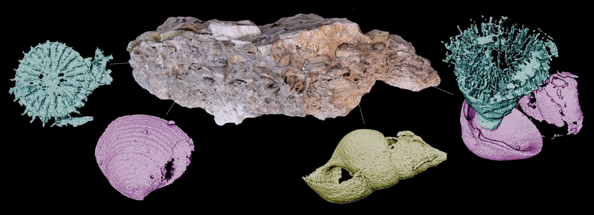
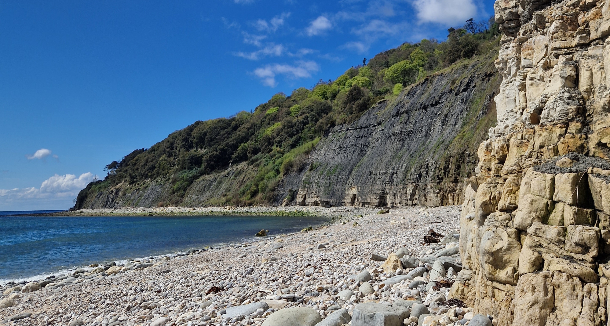

CT scanning of shell beds from the Upper Triassic of England

Overview
This project investigated fossil shell beds as archives of past ecological dynamics. Shell beds can preserve detailed information on taxonomic composition, size distribution, spatial organization, and biotic interactions, yet such data are often inaccessible when fossils are embedded in lithified sediment or preserved only as internal molds. The objective was to develop a non-destructive imaging workflow to visualize and quantify fossils within consolidated shell beds.
Methods
Fieldwork was conducted at Pinhay Bay (Devon, UK), sampling Upper Triassic deposits. Specimens were scanned using computed tomography, and volumetric datasets were processed to digitally isolate individual fossils. Segmentation and 3D reconstructions were performed in ImageJ and Avizo. Dissolution of original carbonate shells created density contrasts between matrix and fossil cavities, enabling high-resolution segmentation and accurate morphological reconstruction.

Results
The assemblage included corals, gastropods, and bivalves. Biotic interactions, such as corals encrusting bivalve shells, provided insights into paleoecological relationships and environmental conditions. This project demonstrated the potential of CT-based virtual paleontology for quantitative community analysis and laid the groundwork for future comparative studies of shell-bed dynamics across stratigraphic intervals. Results were presented as a poster at a student scientific conference.

